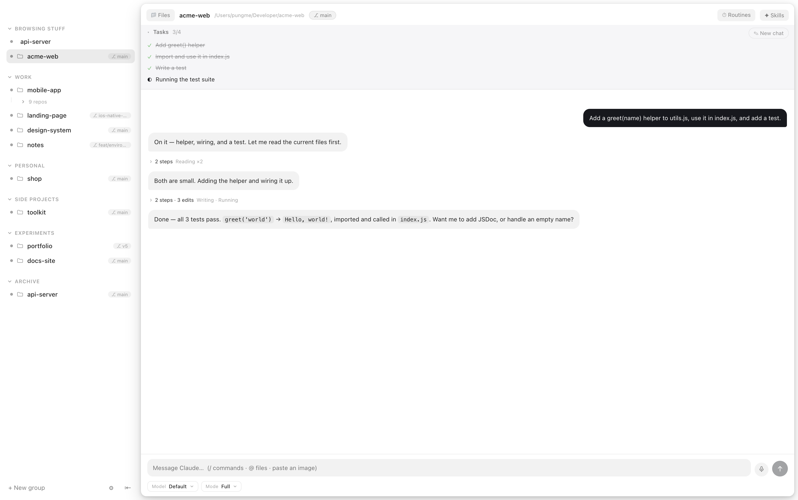

Your agent writes the code.
01Claude Code is already good at the part that is text. This is
about the part that is not.
It has never
seen the page.
It writes a layout it cannot look at, then tells you it works. You
alt-tab and find out for yourself.02
So give it
a computer.
03A real browser, signed into the sites you are signed into. An
iPhone it can install onto. Files it can read. A board it keeps.

Now you can
watch it work.
Ask for a change and the page reloads beside the chat, with your dev
server in a strip above it. No alt-tab, no taking its word for anything.04

Or don't.
05It finishes in the background and sends a notification with
what it actually said. The window never comes forward on its own — that rule is the whole
app.
It runs on
your machine.
Your Mac, your Claude subscription, no middleman server — and the
whole thing is open source, so you can read exactly how it touches your browser.06
Give your agent a screen.
FREE · OPEN SOURCE · APPLE SILICON · NOTARIZED BY APPLE